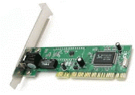
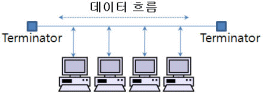
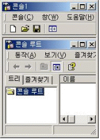

네트워크관리사-2급 (2010-07-18 기출문제)
1과목: TCP/IP
1. NIC(Network Interface Card)에 대한 설명으로 옳지 않은 것은?

- NIC는 이더넷, 토큰링, FDDI와 같은 네트워크 형태에 따라 설계된 어댑터이다.
- OSI 7 Layer 중 전송 계층에서 사용된다.
- LAN 카드라 불리고 컴퓨터 내에 설치되는 확장카드이다.
- 대부분의 NIC에는 MAC(Media Access Control) 주소가 부여되어 있다.
(정답률: 86%)

2. IPv4의 IP Address 할당에 대한 설명으로 옳지 않은 것은?
- 모든 Network ID와 Host ID의 비트가 ‘1’이 되어서는 안 된다.
- Class B는 최상위 2비트를 ‘10’으로 설정한다.
- Class A는 최상위 3비트를 ‘110’으로 설정한다.
- ‘127.x.x.x’ 형태의 IP Address는 Loopback 주소를 나타내는 특수 Address로 할당하여 사용하지 않는다.
(정답률: 73%)
3. TCP/IP에서 Broadcast의 의미로 올바른 것은?
- 한 호스트에서 다른 한 호스트로 메시지가 전송되는 것
- 한 호스트에서 로컬 랜 상의 특정 그룹 호스트들에게 메시지가 전송되는 것
- 한 호스트가 로컬 랜 상의 모든 호스트에게 메시지를 전송하는 것
- 그룹 호스트들이 특정 그룹 호스트들에게 메시지가 전송되는 것
(정답률: 80%)
4. 라우팅 프로토콜에 대한 설명으로 옳지 않은 것은?
- RIP, IGRP는 Distance Vector 알고리즘을 기초로 하는 프로토콜이다.
- OSPF는 Link State 알고리즘을 기초로 하는 프로토콜이다.
- Distance Vector 알고리즘은 경로를 결정 할 때 거리(Distance)와 방향(Vector)을 이용한다.
- 일반적으로 Link State 알고리즘은 Distance Vector 알고리즘 보다 비교적 규모가 작고, 단순한 네트워크에서 사용된다.
(정답률: 68%)
5. TCP에 대한 설명으로 옳지 않은 것은?
- OSI 7 Layer 중 전송 계층 프로토콜이다.
- 비연결 지향형이다.
- Transmission Control Protocol의 약어이다.
- 신뢰성 있는 데이터 전송을 제공한다.
(정답률: 85%)
6. ARP에 대한 설명으로 올바른 것은?
- Ethernet 주소를 IP Address로 매핑시킨다.
- ARP를 이용하여 IP Address가 중복되어 사용되는지 찾을 수 있다.
- ARP 캐시는 일정한 주기를 갖고 갱신된다.
- 중복된 IP가 발견된 경우 ARP 캐시는 갱신되지 않는다.
(정답률: 58%)
7. ICMP의 Message Type필드의 유형과 질의 메시지 내용을 나타낸 것이다. 타입에 대한 설명으로 옳지 않은 것은?
- 3 - Echo Request 질의 메시지에 응답하는데 사용된다.
- 4 - 흐름제어 및 폭주제어를 위해 사용된다.
- 5 - 대체경로(Redirect)를 알리기 위해 라우터에 사용한다.
- 17 - Address Mask Request 장비의 서브넷 마스크를 요구하는데 사용된다.
(정답률: 52%)
8. TCP/IP 프로토콜 계층 중 TCP와 UDP를 사용하여 도착하고자 하는 시스템까지 데이터를 전송하는 역할을 하는 계층?
- 전송 계층
- 인터넷 계층
- 응용 계층
- 네트워크 접속 계층
(정답률: 90%)
9. 인터넷의 잘 알려진 포트(Well-Known Port) 번호로 옳지 않은 것은?
- SSH - 22번
- FTP - 21번
- Telnet - 24번
- SMTP - 25번
(정답률: 88%)
10. rlogin, telnet을 대체하여 사용되고 있는 SSH에 대한 설명으로 옳지 않은 것은?
- 원격호스트에 안전하게 접속하기 위한 보안 프로토콜이다.
- 패스워드가 전자서명을 통해 암호화되어 보호된다.
- Secure Socket Shell 이라고 부른다.
- 쌍방 간 인증을 위해 Skipjack 알고리즘이 이용된다.
(정답률: 64%)
11. 전자우편을 위한 인터넷 표준 포맷으로, 사용자간의 바이너리(Binary) 파일전송에 관한 인터넷 표준안을 지칭하는 것은?
- MIME
- FTP
- Archie
- SMTP
(정답률: 57%)
12. SNMP(Simple Network Management Protocol)에서 네트워크 장치를 감시하는 요소는?
- NetBEUI
- 에이전트(Agent)
- 병목
- 로그
(정답률: 68%)
13. 라우팅 프로토콜 중 네트워크 거리를 계산할 때 홉(Hop)의 총계만을 사용하는 것은?
- SNMP
- RIP
- SMB
- OSPF
(정답률: 89%)
14. HomePNA 기술에서 데이터 전송에 사용하는 표준 전송 방식은?
- TCP/IP
- CSMA/CD
- HDLC
- VoIP
(정답률: 66%)
15. IEEE 1394에 대한 설명으로 옳지 않은 것은?
- 미국의 애플 컴퓨터가 제창한 개인용 컴퓨터 및 디지털 오디오, 디지털 비디오용 시리얼 버스 인터페이스 표준 규격이다.
- 현재 IEEE 1394a, IEEE 1394b, IEEE 1394q 표준이 계속해서 진행되고 있다.
- IEEE 1394a는 디지털 비디오 녹화기, DVD 캠코더, 고해상도 프린터 그리고 스캐너 등 동급기기 간에 고화질 대용량 데이터 전송을 할 수 있다.
- IEEE 1394b는 IEEE 1394a 표준에서 다른 기능을 추가하여 만든 표준으로 800Mbps~1,600Mbps 전송속도로 통신 할 수 있다.
(정답률: 52%)
16. USB에 대한 설명으로 옳지 않은 것은?
- USB 주변기기는 핫 플러그와 PnP 기능을 지원한다.
- 포트의 크기가 작고 이론적으로 무한 개의 주변기기를 지원할 수 있다.
- PC와 연결 시 별도의 설정이나 H/W가 불필요하다.
- 다양한 장점으로 인해 세계적인 표준규격으로 정해져 있다.
(정답률: 75%)
17. IEEE 802.15.1 표준으로 승인된 규격으로, 가정이나 사무실 내에 있는 컴퓨터, 프린터, 휴대폰 등 정보통신기기는 물론 각종 디지털 가전제품을 2.4GHz 대역의 주파수를 이용해 무선으로 연결해 주는 근거리 무선접속 기술은?
- HomeRF
- IrDA
- WLAN
- Bluetooth
(정답률: 66%)
2과목: 네트워크 일반
18. 프로토콜의 기본적인 기능 중, 정보의 신뢰성을 부여하는 것으로, 데이터를 전송한 개체가 보낸 PDU(Protocol Data Unit)에 대한 애크널러지먼트(ACK)를 특정시간 동안 받지 못하면 재전송하는 기능은?
- Flow Control
- Error Control
- Sequence Control
- Connection Control
(정답률: 56%)
19. 다중화 방식으로 사용되고 있지 않은 것은?
- 주파수분할 다중화(FDM)
- 시분할 다중화(TDM)
- 위상분할 다중화(PDM)
- 파장분할 다중화(WDM)
(정답률: 52%)
20. 회선교환방식에 대한 설명으로 올바른 것은?
- Store and Forward 방식으로 데이터 흐름의 논리적 단위인 메시지를 교환하는 방식이다.
- 송수신 단말장치 간에 데이터를 전송 할 때마다 물리적인 통신경로를 설정하는 방식이다.
- 연결 설정이 불필요한 비동기식 교환방식이다.
- 패킷들의 도착순서가 목적지에서 각기 다를 수 있으므로 재조립 과정이 필요하다.
(정답률: 58%)
21. TCP/IP 프로토콜 계층 구조에서 전송 계층의 데이터 단위를 부르는 이름은?
- Segment
- Frame
- Datagram
- User Data
(정답률: 69%)
22. OSI 7 Layer 중 응용 계층(Application Layer)에서 통신을 수행하는 다양한 정보의 표현 형식을 공통의 전송형식으로 변환하고, 암호화 및 압축 등의 기능을 수행하는 계층은?
- 세션 계층
- 네트워크 계층
- 전송 계층
- 프리젠테이션 계층
(정답률: 68%)
23. 다음은 IEEE 802 규약이다. 잘못 짝지어진 것은?
- IEEE 802.2 - Wireless LAN
- IEEE 802.3 - CSMA/CD
- IEEE 802.4 - Token Bus
- IEEE 802.5 - Token Ring
(정답률: 75%)
24. 네트워크 케이블에서 실제로 움직이는 패킷은 크게 3 섹션으로 구별된다. 다음 중 패킷의 섹션으로 옳지 않은 것은?
- 헤더
- 데이터
- 데이터그램
- 트레일러
(정답률: 59%)
25. LAN의 Topology 중 아래 그림과 같이 공통 배선에 시스템의 모든 요소를 연결하는 방식은?

- 스타형
- 버스형
- 링형
- 결선형
(정답률: 93%)
26. IP(Internet Protocol)는 초기에 주소를 A, B, C 등으로 분류하여 기관에 배정되었는데, 인터넷 주소의 고갈 문제가 대두하면서 주소 크기는 유지하면서 새로운 인터넷 주소 방식 프로토콜이 제정되었다. 이 프로토콜은?
- Classful Interdomain Routing Protocol
- Classless Interdomain Routing Protocol
- New Address Allocation Protocol
- IPv6 Protocol
(정답률: 47%)
27. 광섬유의 종류로 옳지 않은 것은?
- 그레디드 멀티모드
- 그레디드 싱글모드
- 스텝형 멀티모드
- 스텝형 싱글모드
(정답률: 60%)
3과목: NOS
28. 파일 또는 디렉터리의 사용 허가와 보안 기능을 갖는 Windows 2000 Server의 기본 파일 시스템은?
- NTFS
- FAT
- FAT32
- UFS
(정답률: 78%)
29. Windows 2000 Server의 IIS(인터넷 정보 서비스)에서 작업할 수 있는 서비스로 옳지 않은 것은?
- FTP
- DHCP
- NNTP
- SMTP
(정답률: 67%)
30. Windows 2000 Server에서 이미 지정된 이름에 대한 별칭 도메인을 지정하는 DNS 레코드는?
- ISDN
- A
- MX
- CNAME
(정답률: 74%)
31. 자신의 로컬 캐시에 이전에 다운로드 해놓았던 웹 페이지가 존재하는지를 확인하고, 만약 그 페이지가 발견되면, 사용자의 요구를 인터넷에서 새로 찾지 않고 로컬 캐시에 있는 내용을 사용자에게 보내주는 서버는?
- Exchange 서버
- 사이트 서버
- SQL 서버
- 프락시 서버
(정답률: 67%)
32. Windows 2000 Server에서 DHCP 서버에 대한 설명으로 올바른 것은?
- 도메인 이름을 IP Address로 변환하는 역할을 담당하는 서버이다.
- 서로 다른 서브넷(Subnet)을 연결하는 역할을 담당한다.
- 특정 시점의 네트워크에 연결된 컴퓨터에 동적으로 IP Address를 할당한다.
- 원하는 파일을 찾아 전송하는 역할을 담당한다.
(정답률: 79%)
33. Windows 2000 Server에서 제공되는 사용자 계정에 대한 설명으로 옳지 않은 것은?
- 로컬 사용자 계정은 특정 컴퓨터에 로그온 하여 해당 컴퓨터의 자원에 액세스 할 수 있다.
- 도메인 사용자 계정은 도메인에 로그온 하여 네트워크 리소스를 액세스 할 수 있다.
- 기본 제공 사용자 계정은 관리 작업을 하거나 로컬 혹은 네트워크 자원에 접근할 수 있다.
- 로컬 및 도메인 사용자 계정 모두 Local Security Database에 의해 생성되고, Active Directory에 저장된다.
(정답률: 48%)
34. Windows 2000 Server에서 계정 잠금에 대한 설명으로 올바른 것은?
- 사용자가 여러 번 로그인에 실패하였을 때 해당 사용자의 계정을 자동으로 삭제한다.
- 잠금 발생을 위한 로그인 실패 횟수는 관리자에 의해 설정될 수 없다.
- 잠금이 발생한 이후에는 계정 잠금 기간만큼, 사용자 계정을 사용하지 못하도록 관리자에 의해 설정 될 수 있다.
- Windows 2000 Server는 계정 잠금을 지원하지 않는다.
(정답률: 77%)
35. Windows 2000 Server에서 그룹 계정을 사용하는 이유는 그룹에 권한을 설정하여 사용자 계정을 포함시키면 관리하기 편리해지기 때문이다. 그룹 계정의 종류에 해당하지 않는 것은?
- Local Group
- Domain Local Group
- Network Group
- Global Group
(정답률: 60%)
36. Windows 2000 Server 설치 시 기본으로 설치되는 사용자로 알맞게 짝지어진 것은?
- User, Administrator
- User, Guest
- User, Group
- Administrator, Guest
(정답률: 76%)
37. Windows 2000 Server에서 페이징(paging)이 많이 일어날 때 해결할 방법으로 올바른 것은?
- CPU의 처리 속도가 느려서 발행되는 현상이므로, 처리 속도가 빠른 CPU로 교체한다.
- 메모리가 부족해서 일어나는 현상이므로 메모리를 늘려준다.
- 네트워크 병목 현상에 의해 발생되므로 네트워크 트래픽을 줄여준다.
- 그래픽카드의 성능이 느린 경우 주로 발생하므로, 그래픽카드를 교체한다.
(정답률: 63%)
38. Windows 2000 Server에서 백업의 종류와 설명이 바르게 연결된 것은?
- 보통 백업 : 수행하는 날짜에 수정된 모든 파일을 복사한다.
- 매일 백업: 선택된 모든 파일을 복사하고 보관 속성을 해제하여 각 파일이 백업 된 것으로 표시한다.
- 차등 백업 : 보통 백업이나 증분 백업을 수행하기 전에 만들어 졌거나 변경된 파일만 백업한다.
- 복사 백업: 선택된 모든 파일을 복사하지만 보관 속성을 해제하지 않으므로 백업된 것으로 표시되지 않는다.
(정답률: 60%)
39. Windows 2000 Server의 MMC(Microsoft Management Console)의 기능 설명 중 옳지 않은 것은?

- 네트워크 기능들을 모니터링하고 관리도구들을 액세스 하기 위한 관리자 콘솔이다.
- 하나의 관리자 인터페이스에 필요한 관리 요소를 스냅인으로 추가하여 관리할 수 있는 편리한 도구이다.
- 로컬 컴퓨터와 원격 컴퓨터를 하나의 화면에서 관리할 수는 없다.
- 컴퓨터 관리에는 보통 시스템 도구, 저장소, 서비스 및 응용프로그램을 관리한다.
(정답률: 77%)
40. Windows 2000 Server에서 이용할 수 있는 TCP/IP 유틸리티가 아닌 것은?
- ping
- ifconfig
- hostname
- tracert
(정답률: 68%)
41. Windows 2000 Server의 동적 디스크에서 지원하지 않는 볼륨은?
- 단순 볼륨
- 스팬 볼륨
- RAID - 5 볼륨
- RAID - 0+1 볼륨
(정답률: 71%)
42. Linux 시스템에서 사용자가 내린 명령어를 Kernel에 전달해주는 역할을 하는 것은?
- System Program
- Loader
- Shell
- Directory
(정답률: 83%)
43. Linux 시스템 각각의 디렉터리에 대한 설명으로 옳지 않은 것은?
- /bin : 가장 기본적으로 사용하는 명령어가 들어있다.
- /etc : 각 시스템의 고유한 설정 파일들이 위치한다.
- /proc : 시스템 운영도중 파일의 크기가 변하는 파일들을 위한 공간이다.
- /tmp : 임시 파일들을 위한 공간이다.
(정답률: 70%)
44. 사용자가 현재 작업 중인 디렉터리의 경로를 절대경로 방식으로 보여주는 Linux 명령어는?
- cd
- man
- pwd
- cron
(정답률: 72%)
45. Windows 2000 Server의 "시스템 성능 모니터"의 내용으로 옳지 않은 것은?
- 여러 컴퓨터의 데이터를 동시에 모니터링 할 수 있다.
- 시스템 성능 모니터를 이용하면 네트워크 내에 모든 컴퓨터의 프로세서, 메모리, 캐시, 프로세스, 스레드 등의 작동을 모니터링 할 수 있다.
- 차트, 로그, 경고, 보고서의 내용을 데이터베이스나 혹은 스프레드시트로 가져갈 수 있다.
- 시스템의 정확한 작동 정보를 위한 베이스 라인 설정은 다수의 사용자가 시스템을 이용할 때 설정한다.
(정답률: 45%)
4과목: 네트워크 운용기기
46. 네트워크 장비에 대한 설명으로 옳지 않은 것은?
- 브리지(Bridge) : OSI 7 Layer에서 데이터링크 계층을 연결하기 위해 사용한다.
- 허브(Hub) : LAN 상의 여러 컴퓨터를 연결하는데 사용할 수 있다.
- 라우터(Router) : OSI 7 Layer의 전송 계층에서 이종의 프로토콜을 연결하는데 사용한다.
- 리피터(Repeater) : 전송되는 신호가 심하게 왜곡되거나 약화되기 전에 이를 가로챈 다음 증폭해서 재전송해 주는 장치이다.
(정답률: 71%)
47. 스위치 허브(Switch Hub)에 대한 설명 중 옳지 않은 것은?
- 네트워크 관리가 용이하다.
- 네트워크 확장이 용이하다.
- 포트 당 일정한 속도를 보장해 준다.
- 스위치 허브에 연결된 사용자가 많을수록 전송속도는 향상된다.
(정답률: 87%)
48. 무선 랜의 기본 전송기술 중에는 DSSS(Direct Sequence Spread Spectrum) 방식과 FHSS(Frequency Hopping Spread Spectrum) 있다. 이들에 대한 설명 중 올바른 것은?
- DSSS 방식은 무선 통신에서 주파수를 고정하지 않고 시간에 따라 변화시켜 송신하는 방식이다.
- FHSS 방식은 하나의 신호 심볼을 일정한 시퀀스로 확산시켜 통신하는 방식이다.
- DSSS 방식은 변조의 효율성이 좋고, 신호의 동기가 빠르며, 낮아진 전력 밀도로 대역 내 간섭이 적은 장점이 있어 CDMA(Code Division Multiple Access)에 사용되고 있다.
- FHSS 방식은 8.6GHz ~ 8.7GHz 대역의 주파수를 사용한다.
(정답률: 62%)
49. 100Base-FX에 사용되는 케이블은?
- 동축케이블
- 광섬유 케이블
- UTP
- STP
(정답률: 69%)
50. 전력선을 매체로 전력선의 전원파형에 디지털 정보를 실어서 전송하는 통신방식은?
- PLC
- Home PNA
- IEEE1394
- USB
(정답률: 74%)